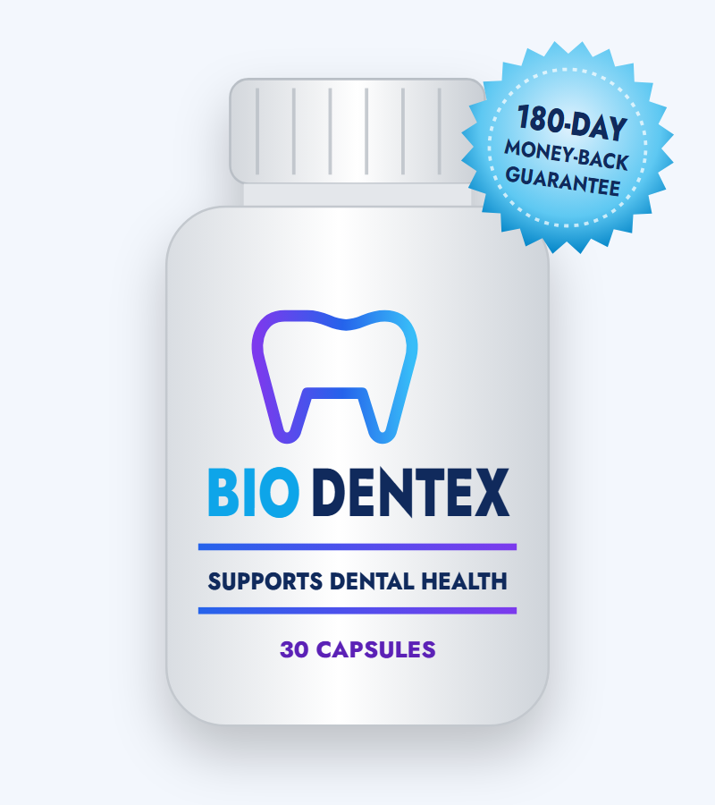
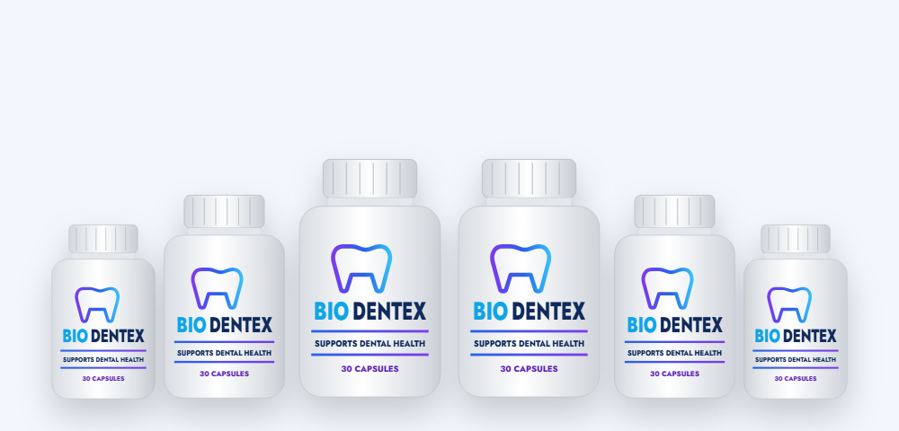
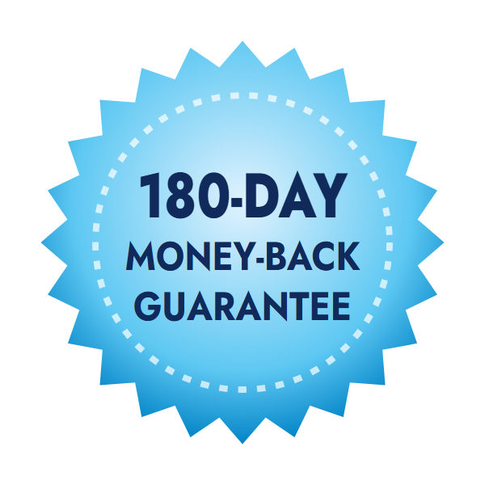

Balancing Oral Bacteria
Xylitol starves cavity-causing Streptococcus mutans; cranberry polyphenols stop bacteria sticking to teeth.*
What's inside BioDentex, what dental supplements can and can't do for your teeth and gums, and how to buy safely

BioDentex (also searched as Biodentix) is a capsule supplement sold to support healthy teeth and gums. Its order page names six ingredients — xylitol, stevia, carrot powder, grape seed extract, peppermint and cranberry — out of "11+ ingredients and nutrients," and offers a 180-day money-back guarantee.
Several of those ingredients do have dental research behind them, but mostly when they touch your teeth — in gum, mints or mouth rinses — rather than when swallowed in a capsule. In this BioDentex review we explain the difference, look at which dental health supplements actually have evidence, and cover the BioDentex price and official website.
BioDentex is a 30-capsule supplement labeled "Supports Dental Health." It's sold through a sales page that presents it as a "medical discovery" with "brand new ingredients specially designed for your teeth," endorsed by a "Dr. Andrew Blake, Research Scientist." Checkout is handled by ClickBank.
The page says each capsule contains a proprietary blend of 11+ plants and minerals. Six are named: xylitol powder, stevia, carrot powder, grape seed extract, peppermint and cranberry. The page also describes BioDentex as non-GMO, gluten-free, stimulant-free and made in the USA.
There's no supplement facts label on the official page, so the remaining ingredients and all amounts are unknown. We also noticed the sales page uses the same template, review count and wording as other supplements from the same network.
BioDentex is a dietary supplement, not a dental treatment, and it isn't a substitute for brushing, flossing and dental visits.
Xylitol starves cavity-causing Streptococcus mutans; cranberry polyphenols stop bacteria sticking to teeth.*
Grape seed proanthocyanidins and carrot (beta-carotene, a vitamin A source) are included for gum tissue and enamel.*
Peppermint and stevia are included for a clean, fresh mouthfeel.*
Here's the catch: almost all of these mechanisms work inside the mouth. Xylitol protects teeth because it's present in saliva and plaque after chewing gum or sucking a mint. Cranberry and grape seed have been studied mainly in mouth rinses, gels and lab dishes. Peppermint freshens breath while it's in your mouth.
A capsule you swallow with water passes your teeth in a second, so most of these local effects don't happen. Once absorbed, small amounts of plant polyphenols circulate in the body, but there's little evidence that this changes teeth or gums.
The six BioDentex ingredients named on the official order page. Amounts are not disclosed.
| Ingredient | What it is | Evidence & best form |
|---|---|---|
| Xylitol powder | Sugar alcohol | Reduces cavities as gum or mints (5–10 g/day, several times a day); little effect swallowed |
| Stevia | Zero-calorie sweetener | Doesn't feed cavity bacteria; no protective effect on its own |
| Carrot powder | Beta-carotene source | Vitamin A supports gum tissue; deficiency is rare |
| Grape seed extract | Proanthocyanidins | Lab and topical studies on enamel and gum bacteria |
| Peppermint | Mint leaf/oil | Freshens breath while in the mouth; mild antibacterial |
| Cranberry | Fruit polyphenols | Anti-adhesion of oral bacteria in lab and mouthwash studies |
The page refers to "11+ ingredients" and "a blend of botanicals and nutrients"; the other ingredients are not named.
None of these is unsafe, and several are genuinely linked to oral health. But the useful forms are chewing gum, lozenges, toothpaste and mouth rinses. Key nutrients for teeth and gums — vitamin C, vitamin D, calcium, vitamin K2 or proven oral probiotic strains — aren't among the named ingredients.
Our take: BioDentex combines dental-sounding ingredients in a form (a swallowed capsule) that doesn't make the most of them.
"Dental supplements" is a broad term, so it helps to separate what has evidence from what doesn't.
The review sites and testimonials for BioDentex ("The difference is night and day with my oral health") can't be verified, and the order page says they aren't typical results.
| Habit or product | What it does | Strength of evidence |
|---|---|---|
| Fluoride toothpaste, twice a day | Strengthens enamel, prevents cavities | Very strong |
| Cleaning between teeth daily | Removes plaque where brushes can't reach | Strong for gum health |
| Dental check-ups and cleanings | Finds problems early, removes tartar | Strong |
| Cutting how often you have sugar | Fewer acid attacks on enamel | Strong |
| Xylitol gum after meals | Reduces cavity bacteria | Moderate |
| Teeth supplement capsules (e.g., BioDentex) | Swallowed plant blend | Weak / untested |
A teeth supplement can at most play a supporting role. If you only change one thing, brushing with fluoride toothpaste and cleaning between your teeth will do far more than any capsule.
If you want to add a dental health supplement to a good routine, these tips help you choose one that's more likely to help:
Measured against these points, BioDentex scores well on safety and its money-back guarantee, but poorly on label transparency and on using the best form for its ingredients.
What you eat and drink — and how often — has a bigger effect on your teeth than most supplements. Every time you have sugar or refined starch, mouth bacteria produce acid that softens enamel for 20 to 30 minutes. Saliva then neutralizes the acid and helps minerals return to the tooth surface. Frequent snacking or sipping sweet drinks keeps that repair process from catching up.
Brush for two minutes twice a day with fluoride toothpaste, spit but don't rinse, clean between your teeth once a day, and drink water after meals. Chewing sugar-free xylitol gum for a few minutes after eating boosts saliva and adds xylitol's anti-cavity effect.
Possible benefits of the named ingredients.*
Xylitol and stevia don't feed cavity-causing bacteria.*
Grape seed and cranberry supply polyphenols.*
Carrot powder provides beta-carotene for healthy tissues.*
One capsule a day with water.
The named BioDentex ingredients are common in foods and oral care products and are generally safe.
BioDentex uses ingredients with real oral-health credentials — especially xylitol and cranberry — but packs them into a swallowed capsule, where they lose most of the local action that makes them useful. Without a label, we can't judge the doses either.
If you want to try BioDentex, keep up your brushing, flossing and dental visits, and use the 180-day guarantee if you don't notice a difference. For cavity prevention specifically, xylitol gum or mints after meals are a cheaper, better-supported option.
Visit the BioDentex Official Website| Option | Form | Typical cost | Evidence |
|---|---|---|---|
| BioDentex | Swallowed capsule blend | $49–$79 a month | None on the product |
| Xylitol gum or mints | Chewed / dissolved | $5–$15 a month | Moderate for cavities |
| Oral probiotic lozenges | Dissolved in mouth | $15–$30 a month | Small benefits for gums |
| Vitamin D (if low) | Capsule | $3–$10 a month | Helps if deficient |
| Prescription fluoride toothpaste | Topical | Varies | Strong for high cavity risk |
Gum disease is painless in its early stages and very treatable when caught early. A professional cleaning and better home care can reverse early gingivitis within weeks.
Search for the BioDentex official website and you'll see the vendor's page alongside look-alikes such as us-us-us-biodentix.com and biodentex.healthy-support.com. To get the genuine product and guarantee:
Each BioDentex bottle is a 30-day supply, covered by the 180-day money-back guarantee.
60-Day Supply
$79/bottle
No bonuses
180-Day Supply · Biggest Discount
$49/bottle
+ bonus guides & VIP newsletter
90-Day Supply
$69/bottle
+ bonus guides & VIP newsletter
Prices checked on the official order page on October 18, 2026 and may change. Bonuses: "Natural Smile Care Guide," "Strong Gums Daily" and a VIP Health & Wellness Guide newsletter. One-time payment.


Every BioDentex order from the official website is covered by a 180-day money-back guarantee. If you're not satisfied, write to the seller within 180 days and return what you haven't used for a full refund of the purchase price.
That's one of the longest guarantees for any dental supplement, giving you time to see your dentist and judge the results.
Try BioDentex Risk-FreeBioDentex is a dietary supplement sold for healthy teeth, gums and fresh breath. Each bottle holds 30 capsules. The seller says it contains a blend of 11+ plants and nutrients and names xylitol powder, stevia, carrot powder, grape seed extract, peppermint and cranberry.
The bottle reads BioDentex, but many people search for Biodentix, and some look-alike sites use that spelling. Both refer to the same dental supplement — make sure you order through the official page.
There are no published studies on BioDentex, and the full label isn't available. Its best-known ingredient, xylitol, helps prevent cavities mainly when it's chewed or dissolved in the mouth several times a day; swallowed in a capsule, most of that local effect is lost. Any benefit is uncertain, so the 180-day guarantee is important.
Some do in specific situations: vitamin C, vitamin D and calcium matter if you are deficient, omega-3s and certain probiotic lozenges have modest evidence for gum health, and xylitol gum helps prevent cavities. No dental supplement replaces brushing with fluoride toothpaste, cleaning between teeth and dental check-ups.
On the official page BioDentex costs $158 for 2 bottles ($79 each, plus shipping), $207 for 3 bottles ($69 each) and $294 for 6 bottles ($49 each). Shipping is free on 3 and 6 bottles, and those packages include the bonus guides.
BioDentex is sold through its official order page with checkout by ClickBank. Look-alike sites such as us-us-us-biodentix.com and biodentex.healthy-support.com also appear in search results. Ordering through the official page gives you the 180-day guarantee.
The seller says to take BioDentex with water. With 30 capsules per bottle described as a 30-day supply, that works out to one capsule a day. Follow the directions on your bottle.
The named ingredients are usually well tolerated. Xylitol can cause gas or loose stools in larger amounts, and cranberry and grape seed may interact with blood thinners. Xylitol is very toxic to dogs, so keep the capsules away from pets.
No supplement can reverse cavities or established gum disease. Cavities need dental treatment, and gum disease needs professional cleaning and good daily care. See a dentist if you have bleeding gums, loose teeth or tooth pain.
No. The order page says it is a one-time payment with no auto-ship.
BioDentex has a 180-day money-back guarantee. Write to the seller within 180 days and return what you haven't used for a refund.
The order page shows short testimonials and claims 127,000 reviews, but these can't be verified and the page notes they are not typical results. The same review count appears on other products from the same sales template.
Get BioDentex for as little as $49 per bottle with free shipping on the 6-bottle package, plus the bonus guides and a 180-day money-back guarantee. Keep brushing and flossing — no capsule replaces them.
Order BioDentex Now